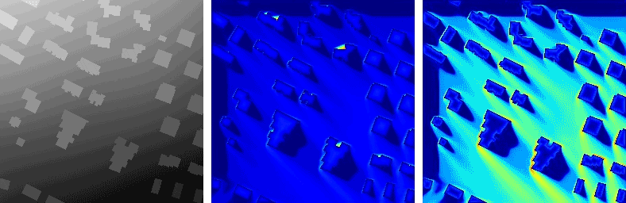
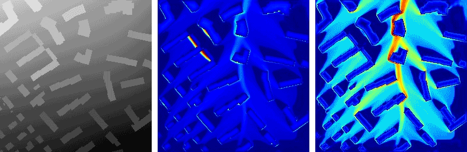
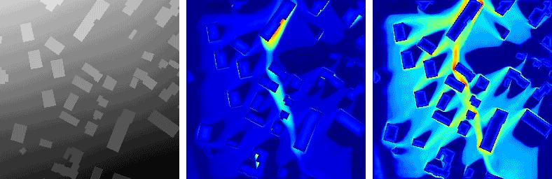
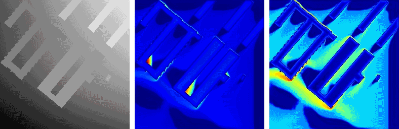
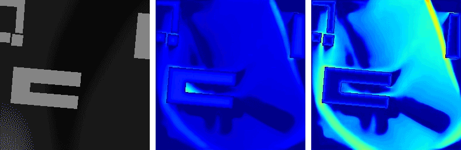
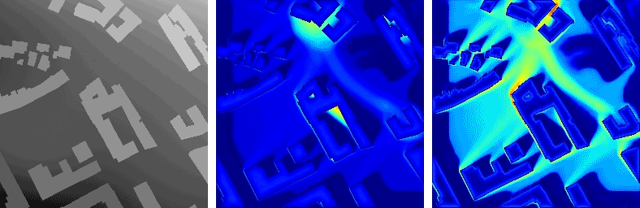

with Dr. João P. Leitão and Dr. Vahid Moosavi
Rapid flood synthesis as a design machine
From Simulation to Synthesis challenges the mindset that computational models should faithfully represent the real. It starts from the so-called frame problem which reveals our inability to enumerate and encode all relevant commonsense knowledge in the form of influential factors and logical relations for even very simple problems.
The changing layouts and the synthesized floods 1
  From Simulation to Synthesis proposes to exchange the interpretability of models with the modeling capacity when solving complex problems. It demonstrates this idea with a series of experiments where physically-based simulations were subsituted by data-driven synthesizers to learn and derive relations between the factor of interests from data. The computational process of data-driven synthesizers no longer reflects the real physical process, thus allowing us to compute not only from inputs to outputs but also in an opposite order using gradients.
The changing layouts and the synthesized floods 2
  Publication: Data-driven rapid flood prediction mapping with catchment generalizability (DOI: 10.1016/j.jhydrol.2022.127726)
Framework
Synthesized cases

case 1

case 2

flood gradient w.r.t. input terrain
gradient-based terrain modification